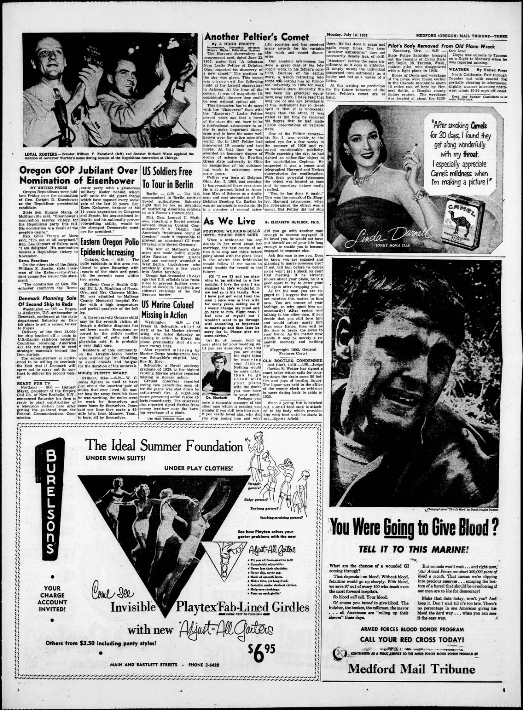
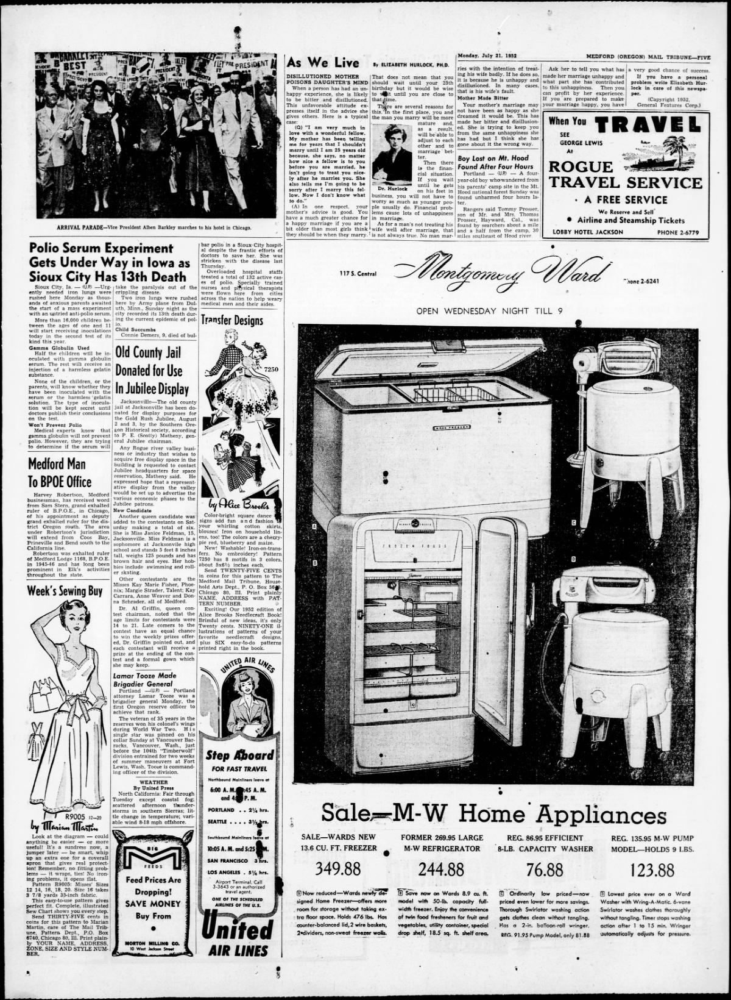

HN HN-588 · July 18, 1952 · Medicine & Public Health > Epidemics, Pandemics & Infectious Diseases > Cholera and other epidemics
Source: Decatur Daily Democrat, p. 6 — original page; CDC Museum, polio history.
Report: “Polio at Epidemic Stage in 9 States†described local outbreaks that had crossed a contemporary incidence threshold and worried that 1952 might exceed earlier case records.
Assessment: The article was a midyear projection, not a final annual count. The national epidemic intensified, helping frame the urgency of later vaccine trials. An incidence threshold applied to particular localities cannot be treated as the infection rate throughout each entire state.
Authentic scans retrieved from Historic Oregon Newspapers (University of Oregon). Article crops are located using the archive's own OCR word coordinates and rendered at native crop resolution; page scans are reduced-size access renditions. No images were generated, mocked, or retouched.


Not yet acquired. Queued for provider-specific acquisition testing (see source-acquisition manifest).
URL (preserved verbatim): https://newspapers.library.in.gov/?a=d&d=DCDD19520718.1.6
Saved research report: Historical_Newspaper_Event_Research_578-602_2026-10-23.md
Evidence note: A newspaper report means a historical publication made a claim; it does not establish that claim as fact. Contemporary reporting is separated from later scholarly context and our own assessment.